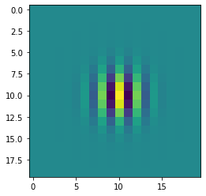

Functional layers that are trainable with backpropagation.
Gabor layer
Convolutional layer that forces a functional Gabor form for its filters. Every parameter of the Gabor can be learnt.
Managing dtype
Tensorflow is a bit picky when it comes to dtype, so it can be useful to define a function that will ensure that every parameter is casted to the same dtype:
a, b = tf.convert_to_tensor(1), tf.convert_to_tensor(1.1)print(a.dtype, b.dtype)# assert a.dtype != b.dtype
<dtype: 'int32'> <dtype: 'float32'>
2022-09-14 10:15:15.285025: E tensorflow/stream_executor/cuda/cuda_driver.cc:271] failed call to cuInit: CUDA_ERROR_NO_DEVICE: no CUDA-capable device is detected
2022-09-14 10:15:15.285095: I tensorflow/stream_executor/cuda/cuda_diagnostics.cc:169] retrieving CUDA diagnostic information for host: megatron
2022-09-14 10:15:15.285109: I tensorflow/stream_executor/cuda/cuda_diagnostics.cc:176] hostname: megatron
2022-09-14 10:15:15.285246: I tensorflow/stream_executor/cuda/cuda_diagnostics.cc:200] libcuda reported version is: 470.57.2
2022-09-14 10:15:15.285298: I tensorflow/stream_executor/cuda/cuda_diagnostics.cc:204] kernel reported version is: 470.57.2
2022-09-14 10:15:15.285310: I tensorflow/stream_executor/cuda/cuda_diagnostics.cc:310] kernel version seems to match DSO: 470.57.2
c, d = cast_all(a, b)print(c.dtype, d.dtype)assert c.dtype == d.dtype
<dtype: 'float32'> <dtype: 'float32'>
Creating a Gabor filter in TensorFlow
First of all we need to be able to generate Gabor filters as TensorflowTensor:
2022-09-14 10:15:16.577480: I tensorflow/compiler/mlir/mlir_graph_optimization_pass.cc:185] None of the MLIR Optimization Passes are enabled (registered 2)

Creating a set of Gabor filters
It can be a little bit tricky to translate plain Python for loops into tf.function.
In plain Python, if we wanted to create a set of filters we could initialize an empty array or list and fill it with the different filters generated inside a for loop, but we can’t do that inside a tf.function because Tensorflow tries to build the computational graph and starts to nest graphs inside graphs and the performance is terrible. Luckily for us, they implement a tf.TensorArray that can be used inside a tf.function to this effect.
2022-09-14 10:15:18.653420: W tensorflow/core/framework/op_kernel.cc:1692] OP_REQUIRES failed at functional_ops.cc:374 : Internal: No function library
2022-09-14 10:15:18.654478: W tensorflow/core/framework/op_kernel.cc:1692] OP_REQUIRES failed at functional_ops.cc:374 : Internal: No function library
2022-09-14 10:15:18.655449: W tensorflow/core/framework/op_kernel.cc:1692] OP_REQUIRES failed at functional_ops.cc:374 : Internal: No function library
2022-09-14 10:15:19.839502: W tensorflow/core/framework/op_kernel.cc:1692] OP_REQUIRES failed at functional_ops.cc:374 : Internal: No function library
2022-09-14 10:15:19.840573: W tensorflow/core/framework/op_kernel.cc:1692] OP_REQUIRES failed at functional_ops.cc:374 : Internal: No function library
2022-09-14 10:15:19.841554: W tensorflow/core/framework/op_kernel.cc:1692] OP_REQUIRES failed at functional_ops.cc:374 : Internal: No function library